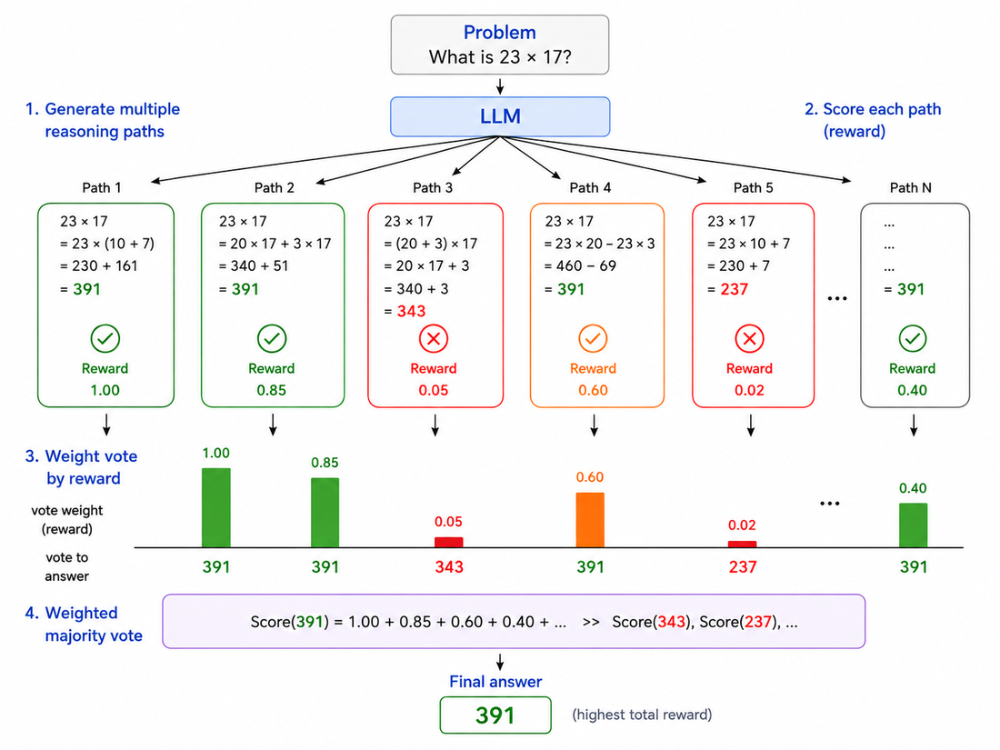
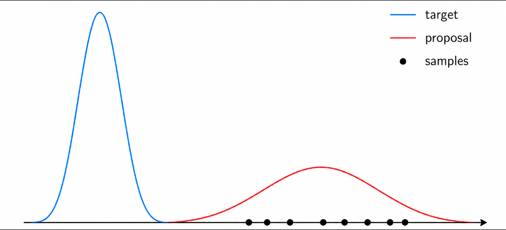
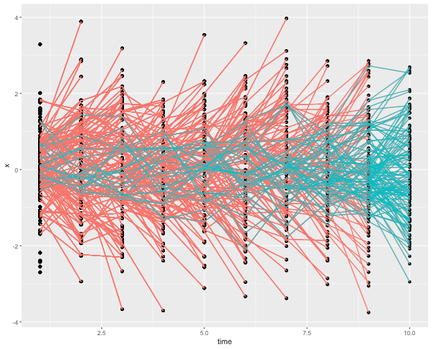
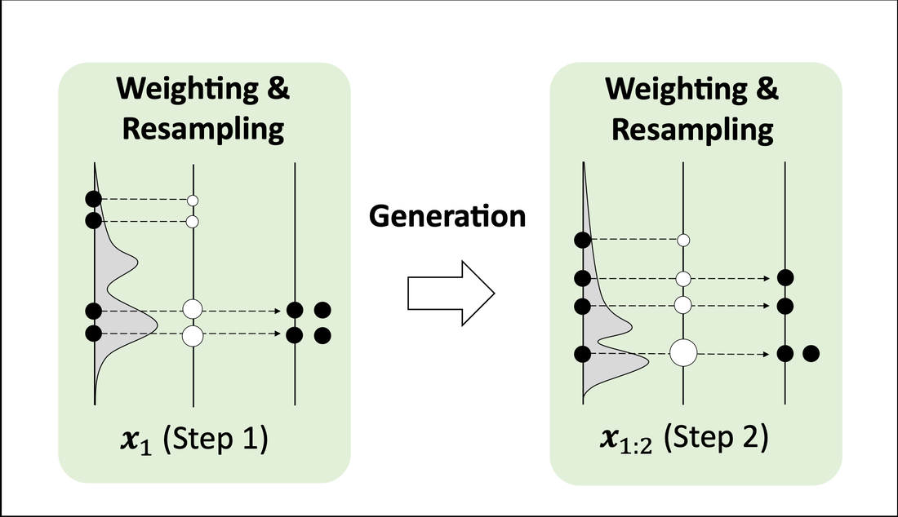
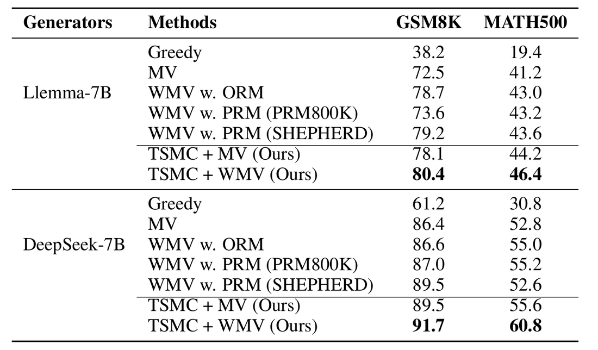
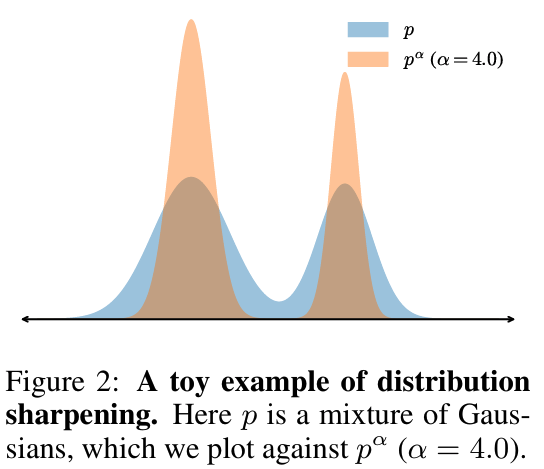
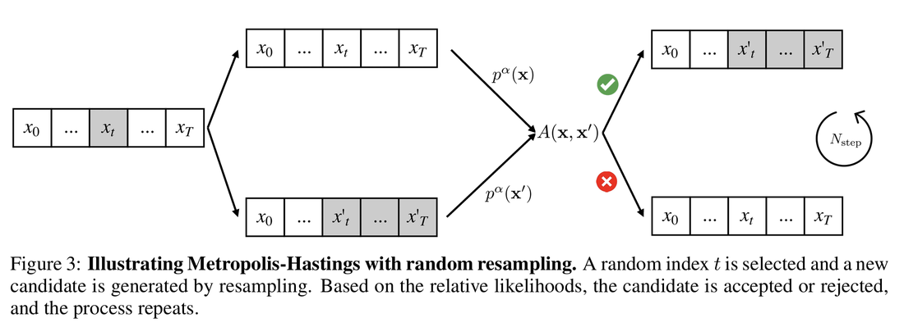
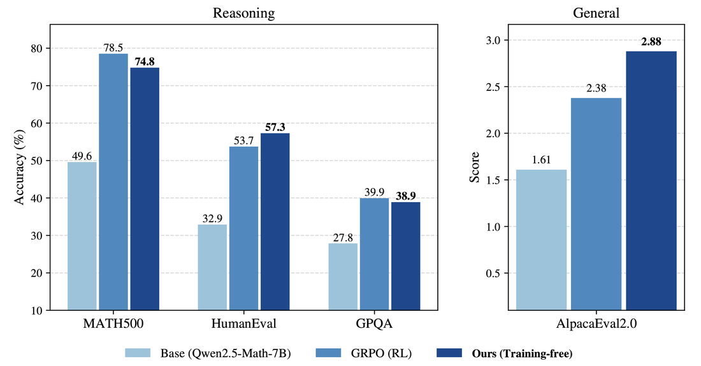

强化学习（RL）已成为优化现代机器学习系统的主流范式，从AlphaGo到大型语言模型（LLM）。给定一个可评估的目标，配方很简单：把目标的（负）函数当奖励、采样解决方案、用reward优化模型参数。
这自然引出一个问题：强化学习是优化一个目标的唯一方式吗？ 答案显然是否定的。很多方法用非常不同的视角逼近同一个问题。本文是系列第一篇，收集这些思路（含作者自己的工作）成一个小画廊，并强调方法之间乍看无关却相连的点。
假设一个神经网络模型定义了解决方案上的分布p_θ(x)。给定一个要最小化的目标g(x)，目标是找到一个实现低期望目标的分布：
min_p E_{x~p(x)}[g(x)].
一个自然的方法是强化学习。如果把分布参数化为p_θ，REINFORCE给出梯度估计：
∇ L(θ) = E_{x~p_θ(x)}[ g(x)·∇ log p_θ(x) ].
但REINFORCE只是利用g(x) 的一种方式。对同一问题的不同视角导向非常不同的方法族。
直接解最优分布p(x) 很难：本质上等价于解min_x g(x)。换个更软的角度：不完全集中在最优解，而是寻求能采样出低目标解决方案的分布。考虑能量基模型（EBM）：

p(x) = (1/Z_β)·exp( -g(x)/β ),
其中Z_β 是归一化常数、β>0控制分布集中到低目标解的程度。
当 β→0时，概率质量越来越集中到g(x) 的最小值：低温极限下恢复原始优化问题。
上面的分布隐式假设解上的均匀先验。更一般地，若想既要好解又要保持接近某个先验分布p_0，考虑：
min_p E_{x~p}[g(x)] + β·KL(p || p_0). (1)
第一项偏好更好的解、第二项让新分布靠近p_0。这个优化有闭式解：
p(x) ∝ p_0(x)·exp( -g(x)/β ). (2)
当p_0均匀时，就回到上面的EBM。
如果你熟悉LLM对齐（alignment），这个形式应该眼熟：式 (1) 与RLHF常用的KL正则结构相同；式 (2) 对应的指数倾斜（exponential tilting）与对齐的分布视角密切相关。
我们现在把优化问题变成了生成问题：不再直接搜索g(x) 的最小值，而是从集中在好解上的分布采样。
若能从这个软分布采样，很多简单策略就能应对原始优化问题：
贪心解码：返回高概率解；退火：逐步降低 β 让分布集中；Best-of-N：生成多个候选选最好的；还有其他。
但这些策略都留下一个根本问题：怎么真正从目标分布采样？
目标分布是：
p(x) ∝ p_0(x)·exp( -g(x)/β ).
一般来说，因难处理的归一化因子Z_β，直接采样很难。幸运的是，这正是经典采样方法要解的。
最简单的或许是重要性采样（IS）。给定

p(x) ∝ p_0(x)·exp( -g(x)/β ).
我们不直接采，而是从更易采的proposal分布q(x) 抽取候选x^1,…,x^n，给每个候选赋重要性权重：
w̃(x^i) = p(x^i)/q(x^i).
然后归一化权重：
w(x^i) = w̃(x^i) / Σ_{j=1..n} w̃(x^j).
未知的归一化常数Z_β 在归一化时方便地消掉了，所以永远不用算它。于是可以按类别分布重采样一个下标
j ~ Categorical(w), x̂ = x^j,
让x̂ 近似成为目标分布的样本。当n→∞ 时，上面的类别分布收敛到目标分布。这给了我们一个可计算的、通过重要性加权近似采样目标分布的方式，无需访问Z_β 或采样p本身。
一个相关的思想出现在LLM推理的reward-weighted majority voting：生成多个候选解、打分、让高分候选对最终答案贡献更强。
如果直接用基座模型当proposal，即q(x)=p_0(x)，重要性权重简化为
w(x) ∝ exp( -g(x)/β ),
只依赖解的客观函数值。
重要性采样有一个根本弱点：当proposal与target分布相距很远时，几乎全部样本得到可忽略的权重。
结果是，可能需要海量的样本才能对目标分布的高概率区域获得有意义的覆盖。
对长推理轨迹这个问题特别严重：即便proposal每步只与target差一点点，这些偏差会沿长序列累积（权重被指数压缩）。
因此一个自然想法是沿路纠偏、而不是到最后才纠。
这引向Twisted SMC（TSMC），作者在先前研究中把它用于LLM推理。

假设完整解由T步组成，x = (x_1, …, x_T)（x=(x_1,…,x_T)）。完整解上的目标分布是

p(x_{1:T}) ∝ p_0(x_{1:T})·exp( -g(x_{1:T})/β ).

但只有t步之后目标分布应该长什么样？我们可以通过对所有可能的未来延续做边际化得到：
p(x_{1:t}) ∝ p_0(x_{1:t})·V(x_{1:t}),
这里
V(x_{1:t}) = E_{x_{t+1:T}~p_0(·|x_{1:t})}[ exp( -g(x_{1:T})/β ) ].
是一个软值函数（soft value function）：通过对可能未来完成度求平均，度量一个部分解有多有前途。
实践中可以训练一个值网络逼近这个量。因为期望是对从基座策略p_0采样的延续取的，标准蒙特卡洛回归就够。
这揭示一个重要结构：中间目标与最终目标有相同的reward-tilted形式：只是最终reward被替换成软值V(x_{1:t})。
TSMC自然随之而来。假设在t步有n个近似按p(x_{1:t}) 分布的粒子：
用基座模型延展每个粒子：
x^{i}_{t+1} ~ p_0(·| x^{i}_{1:t}), i=1,…,n.
给结果粒子重新加权：
w^i ∝ V(x^{i}_{1:t+1}) / V(x^{i}_{1:t}).
按归一化权重重采样n个粒子。然后重复。
重要的是，TSMC全程保持固定的n序列批次、批次宽度不变，因此天然适合高效并行：不像树状搜索那个批次宽度可变。
不是先生成完整解、最后才问它好不好，TSMC反复问：哪些部分解还有有前途的未来？
无望的轨迹可被尽早丢弃、有前途的得到更多计算量。
这凸显与重要性采样的关键区别：两者可瞄准同一分布，但TSMC在整条轨迹里逐步纠偏、而非只在完整解之后纠一次。
另一个从EBM采样的经典方法是马尔可夫链蒙特卡洛（MCMC）。

核心想法很简单：不从头生成独立样本（目标分布复杂时难），MCMC构造一条在状态空间游走、逐渐偏向高概率区域的链。

具体地，从当前状态x出发，提议一个邻近状态：

x′ ~ q(·| x).
然后决定接受或拒绝提议。若新状态概率高于当前状态总是接受；若更低则只以一定概率接受（因为概率较低的状态在新状态附近出现的频率更低）。
最经典的版本是Metropolis-Hastings，以概率接受x′：
α(x′|x) = min( 1, p(x′)·q(x|x′) / (p(x)·q(x′|x)) ).
一个关键便利：归一化常数在比值里消掉了：即便p(x) 只知道到归一化为止，也能跑MCMC：这正是EBM的情况。
有趣的是，这个经典想法近期在LLM推理里重现。Karan & Du (2025) 问：RL后训练的部分收益能否纯靠采样获得？
Yue et al. (2025) 等先前研究提出一个对「RL用于推理」的挑衅性解释：其部分收益可能来自重塑模型的输出分布，让成功的推理轨迹……
从这个角度，RL可以被想成锐化推理轨迹上的分布。
受此启发，给定基座模型分布p_0(x)，他们考虑一个锐化目标分布：
p_α(x) ∝ p_0(x)^{α}, α > 1.
把相对更多的概率质量放到基座模型自己认为更可能出现的序列上。
重要的是，这不等价于简单降低token级采样温度。
标准温度采样局部锐化每个条件分布：
p_0(x_t | x_{ 而上面的分布锐化的是整条序列的概率p_0(x_{1:T})：全局、序列级锐化。 现在我们正好有前面描述的MCMC问题：p_α(x)（用基座模型p_0）到归一化为止容易评估、却难以直接采样。 剩下问题因此是：LLM的proposal q(x′|x) 应该长什么样？ 他们的答案特别简单。给定当前序列x，随机挑一个位置、保持该位置之前不变（前缀）、让基座LM自由生成剩余部分。 形式化地，采样随机切点t ~ Uniform({1,…,T}) 后，proposal是： q(x′|x) = p_0(x′_{t+1:T} | x_{1:t}), x′_{1:t} = x_{1:t}. 也就是说，propalsal就是基座模型条件于共享前缀。这很容易算：无需额外训练，只需从切点向前跑模型。 然后应用上面引入的同一Metropolis-Hastings接受/拒绝规则： α(x′|x) = min( 1, p_α(x′)·q(x|x′) / (p_α(x)·q(x′|x)) ). 被接受的序列成为下一步MCMC的起点。重复此过程，模型能不断修订自己的推理轨迹，而接受/拒绝步骤把链偏向p_α。 还有一个困难：推理轨迹可能很长，使整条轨迹上的MCMC难以混合（mix）。 作者因此当且仅当需要时渐进增加序列长度，示意性： ℓ_1 → ℓ_2 → … → T. 每一阶段先把当前序列延展一块token、再做几轮「重采样→接受/拒绝」再进入下一阶段。一个阶段的样本是下一阶段的初始状态。 这个做法实际与TSMC很类似，区别是他们每步有多次refinement：把SMC变成Sequential MCMC。 结果程序与RL有非常不同的解释：RL花计算改变模型参数、让好的轨迹更可能；这里模型参数不动、计算花在搜索上：RL训练+搜索vs纯搜索。 值得注意：这篇论文展示，这种无需训练的过程在几个基准上达到与RL后训练相当的推理性能。 图8展示这个「reason-with-sample」框架；图9是其MCMC结果。 乍看之下，上面的采样方法很大程度上不依赖神经网络训练。但在类似RL的设定里，学习常可看作两个交织部分：采样和学习。 如果能从（或足够接近）期望的目标分布获得样本，剩下问题可简化成监督学习：训练模型模仿这些样本。 重要的是，这也正是原则性采样方法与启发式解码策略的区别：它们的输出不只是碰巧得高分的候选：在适当假设下，它们是对目标分布的可证样本。 如何把高级采样方法与神经网络训练紧密整合，因此仍是值得探索的激动人心的方向。 参考：https://shengyu-feng.github.io/blog/2026/08/27/beyond-RL/Remark
三种采样方法各有取舍：IS从proposal抽取+加权，代价是proposal与target偏离时权重爆炸；TSMC用软值函数V(x_{1:t}) 沿轨迹逐步纠偏（reweight+resample固定n粒子、早弃无望轨迹）；MCMC（Metropolis-Hastings） 提议近态+按接受率接受，归一化常数在比值中消掉。方法论落点：RL可以被重新理解为把「锐化推理轨迹分布」外化为纯采样：MCMC的全局序列锐化p_0(x)^α 与温度采样的局部锐化是本质不同的两件事；且这种无需训练的采样过程能达到与RL后训练相当的推理性能。
对做LLM推理/对齐/采样方法的人，这篇的价值是把「IS/Twisted-SMC/MCMC与RL的关系」讲透：它们不是替代RL的黑魔法，而是从『生成→评估→纠偏』视角看同一优化问题的不同实现，且为『训练-free推理增强』提供了可证的理论底座。
智谱GLM 5.2 RL: 单Rollout异步优化SAO稳定训练1000步全面超越GRPO
Agent卷向AI Infra: SGLang团队用硬核Agent优化框架和CUDA Kernal性能
RL的下一个大突破：不是优化可验证问题而是把'不可验证'领域变得'可验证'
Kimi K3技术解析之LatentMoE: 隐藏维度压缩至潜空间，通信与带宽开销同比例骤降
NVIDIA TriAttention解读: KV Cache压缩最大的问题不是算法而是两个Infra问题
Kimi K3技术报告-后训练Infra: 三阶段RL,MoonEP3,五千万沙箱,KDA感知缓存
【Agent for AI Infra三】摩尔线程MusaCoder国产算子生成超过Opus4.7：数据合成-SFT-RL全栈拆解
Kimi K3技术详解之KDA: 线性注意力如何精准编辑被压缩的记忆
小米MiMo罗福莉:8卡GPU让1T参数模型跑出1000 TPS , FP4+DFlash+TileRT全解读
KVCache缝合术: 突破前缀匹配天花板,首Token快14倍 多文档快2~4倍
MLP就是Hebbian记忆: 无需训练，往Transformer块注入事实知识的构造方法
Kimi K3技术解析之AttnRes: 打破Transformer沿用十年的残差各层等权的假设
TokenSpeed-Kernel：把推理内核做成一等公民
榨干GPU性能：流水线解码消除GPU气泡，推理吞吐提升35%
阿里Sparse Attention on CXL替代RDMA做KV Cache解耦 推理2.1×吞吐, 9.7×TTFT